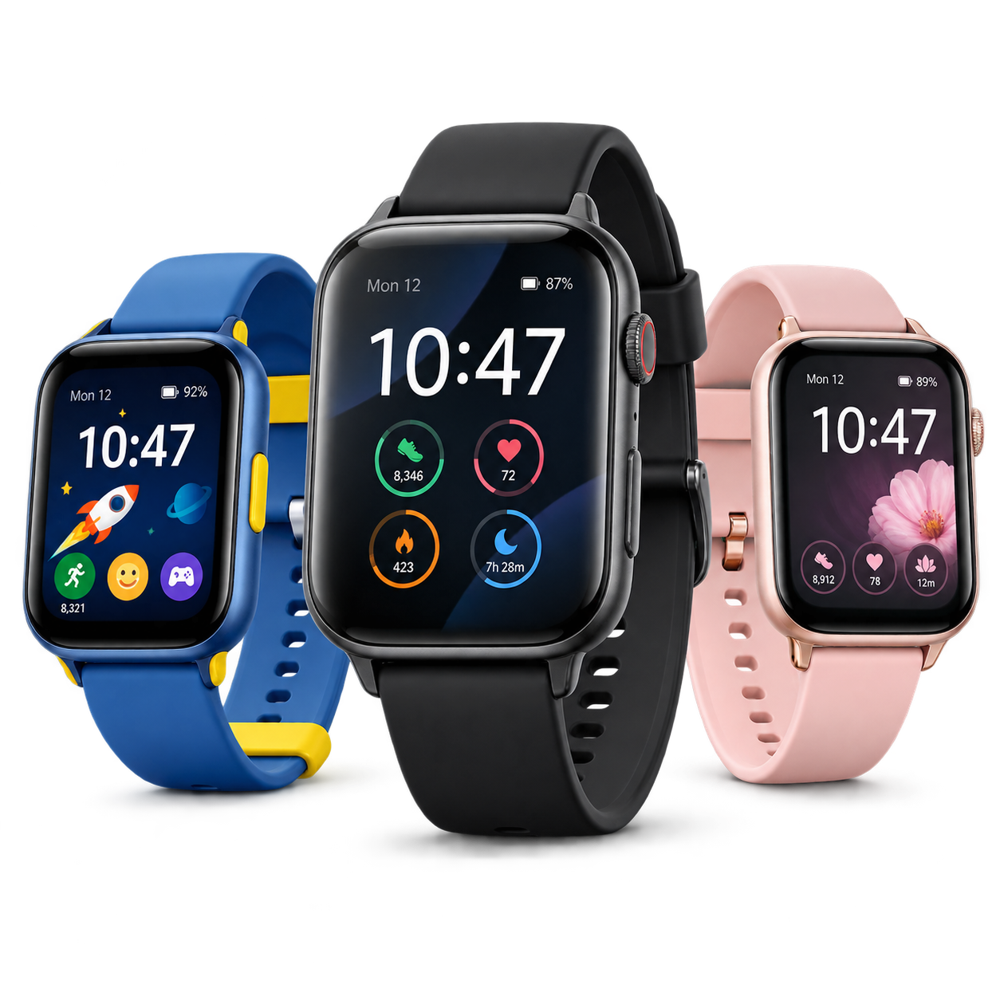

Smart Living for Every Age
Meet TimeBridge, the stylish smartwatch designed for children, teenagers and adults. Stay connected, active, organised and safe wherever life takes you.

Starting from ₦22,500
Explore TimeBridgeChoose the Perfect TimeBridge
TimeBridge Junior
A colourful, easy-to-use smartwatch created for children aged six and above. It includes activity tracking, alarms, an emergency contact button and fun watch faces.
Price: ₦22,500
TimeBridge Classic
A stylish everyday smartwatch for teenagers and adults. It helps you track your activities, manage notifications and stay organised.
Price: ₦34,500
TimeBridge Family Duo
One TimeBridge Junior and one TimeBridge Classic—the perfect combination for parents and children.
Price: ₦52,000
Smart Features for the Whole Family
Adjustable Comfort
Soft, adjustable straps provide a comfortable fit for both smaller and larger wrists.
Activity Tracking
Track your daily steps, exercise time and active minutes throughout the day.
Calls and Notifications
Receive call, message and reminder notifications directly on your wrist.
Emergency Contact Button
Children can quickly contact a selected parent or guardian when they need help.
Custom Watch Faces
Choose from colourful, playful or professional watch faces to match your personality.
Long-Lasting Battery
Enjoy up to seven days of battery life from a single charge.
Water-Resistant Design
TimeBridge can handle light rain, handwashing and everyday splashes.
Getting Started Is Easy
- Charge your TimeBridge smartwatch.
- Download the TimeBridge mobile application.
- Connect the watch to your smartphone.
- Select a child, teenager or adult profile.
- Personalise your watch face and begin using your watch.
Find Your Favourite Colour
Midnight Black
A bold and professional choice for everyday wear.
Ocean Blue
A cool and refreshing colour suitable for every age.
Rose Pink
A soft and stylish colour with a beautiful finish.
Sunshine Yellow
A bright and playful colour created for energetic personalities.
Mint Green
A fresh and calming colour that stands out gently.
What’s Inside the Box?
- One TimeBridge Smartwatch
- One adjustable wrist strap
- One magnetic charging cable
- One user guide
- Six-month product warranty
Loved by Children and Adults
Parent’s Review
“My daughter loves the colourful watch faces, while I love the emergency contact feature. TimeBridge gives us both confidence.”
— Mrs Jacob, Lagos
Adult’s Review
“The TimeBridge Classic is stylish, comfortable and easy to use. It helps me monitor my activities and organise my day.”
— Isaac, Abuja
There’s a TimeBridge for Everyone
Choose the perfect TimeBridge model for yourself or someone you love. Order today and receive a free additional wrist strap.
Order Your TimeBridge